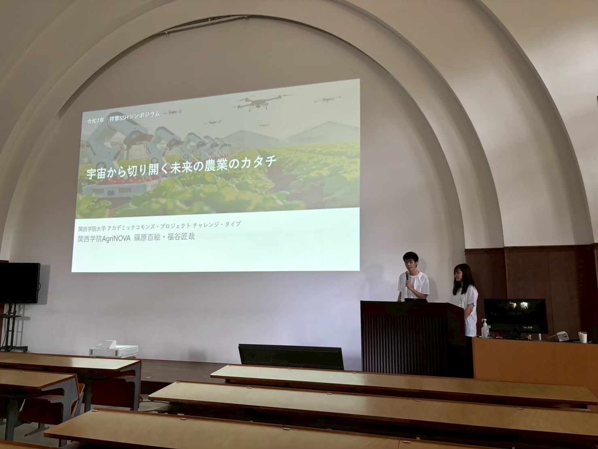

2025年9月20日に兵庫県立三田祥雲館高校で「祥雲SSHシンポジウム」が開催されました。AgriNOVAとしては初となる外部のイベントで、 「田植え日」に注目した口頭発表を行いました。
宇宙から切り開く未来の農業のカタチ
2025年9月20日に兵庫県立三田祥雲館高校で「祥雲SSHシンポジウム」が開催されました。 毎年開催されているこのイベントですが、2025年度のテーマは「ITの力で生物多様性を守る!!」ということで、AgriNOVAで取り組んでいる研究事例を 発表しました。
今回発表したテーマは「地域植生の季節変化に基づく田植え時期推定アルゴリズムの開発」と題し、農業を取り巻く「季節」と地域生態系 (植生) の関係について考察しました。 その土地に応じた作物を栽培する「適地適作」は農作物の品質や収量の向上に寄与しますが、適した時期に適切な栽培を行う「適期適作」も効率的かつ持続可能な農業の実現には極めて重要です。 特に、生態系と密接に関連している農業では、その地域の生物が持つ季節感 (フェノロジー) に栽培カレンダーが大きく影響します。こうした背景から、経験に依存せずに適切な時期に作物の栽培 スケジュールを設定できるような機械学習アルゴリズムの開発を行いました。
第1部：基調講演
第1部は、株式会社バイオームの藤木庄五郎氏による基調講演でした。熱帯雨林での研究から、生物多様性の喪失に強い危機意識を持ち、 ビジネスとして生物多様性の保全を行うまでの経緯や、重要にしている考え方などについてお話を聞くことができました。 直接的な生物多様性の保全と、持続可能な農業を通しての間接的な生物多様性の保全と、アプローチの違いこそありますが、 考え方の根本的な部分は共通しており、今後の活動を考えるうえでも参考になる基調講演でした。
第2部：活動報告
第2部は三田祥雲館高校の学生、AgriNOVA、兵庫県立人と自然の博物館の三橋先生のそれぞれの活動報告でした。
AgriNOVAの発表では、前半は代表から活動理念の紹介と行っている活動についての説明を行いました。 代表のこれまでの経験で体感した「飢餓・貧困」という課題の深刻さと、この課題の解決に欠かすことのできない食料生産システムである 「農業」が直面する様々な課題について、「データ」を活用してどのような未来を切り開くかという講演内容は、参加者の高校生からも 好評で、「印象に残った」という感想を多くいただきました。
後半では、「地域植生の季節変化に基づく田植え時期推定アルゴリズムの開発」をテーマに、研究事例の紹介を行いました。 「植物の最適な植え付け時期を予測するには、同じく植物である地域の植生の季節変化に注目することで、環境変動が大きくなっても 影響を最小限に抑えることができる」という仮説のもと、宇宙から撮影した衛星画像により地域の雑木林の活性 (NDVI) をとらえ、 その季節変動をデータとして学習させることで、田植え日を有意に予測できるモデルの作成に成功しました。 生物と情報科学が絡みあっており、少し内容的に難しい発表にはなりましたが、参加者の方々には熱心に講演内容をお聞きいただきました。
第2部では、三田祥雲館高校の生徒による「GISによるクビアカツヤカミキリの発生予測」として、GISを活用した事例や、人と自然の博物館の三橋先生による 兵庫県内の生物多様性の保全に博物館などで蓄積された様々な記録がどのように活用されているかなどの発表もあり、こちらも勉強になる内容でした。
第3部：パネルディスカッション
第3部は人と自然の博物館の衛藤先生をファシリテーターに迎え、第1部、第2部の登壇者によるパネルディスカッションが行われました。 AgriNOVAの発表に対しても、技術的な質問に加え今後の可能性が広がるようなご質問・ご提案をいただいたほか、 それぞれの参加者が「生物多様性の喪失」に危機意識を抱いたきっかけなど、議論が深まる質問が多く、非常に勉強になる時間となりました。
イベントを終えての感想
以下はイベントを終えての感想です。
初めての講演ということで緊張しましたが、実体験をもとにAgriNOVA の設立理由や現在の活動についてお話させていただきました。 また祥雲館高校の生徒の方をはじめ沢山の方々と交流でき貴重な体験をさせていただきました。
異なる側面から「ITと生物多様性」について論じることができ、発表者としてだけでなく参加者としても有意義な時間を過ごせました。 初めての対外的なイベントとして、地域の高校でのイベントに招待していただけたことは光栄で、単にデータを触るだけでなく、 地域との交流やアウトリーチ活動についても充実させていく必要性を再度認識するきっかけとなりました。
また、聴衆として参加したメンバーからも以下のような感想が聞かれました。
まとめ
AgriNOVAとして初めて登壇する対外的なイベントで、登壇者には緊張も見られましたが、参加者からも好評で良い発表が出来たのではないかと思います。 今回の経験を糧に、今後の活動をより充実させていきたいと思えるような有意義な時間を過ごすことができました。 この場を借りて、イベントの運営にご尽力いただいた皆様に心より御礼申し上げます。